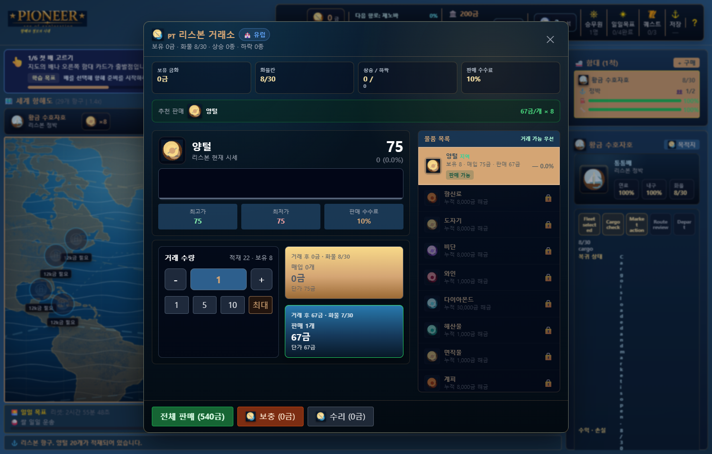
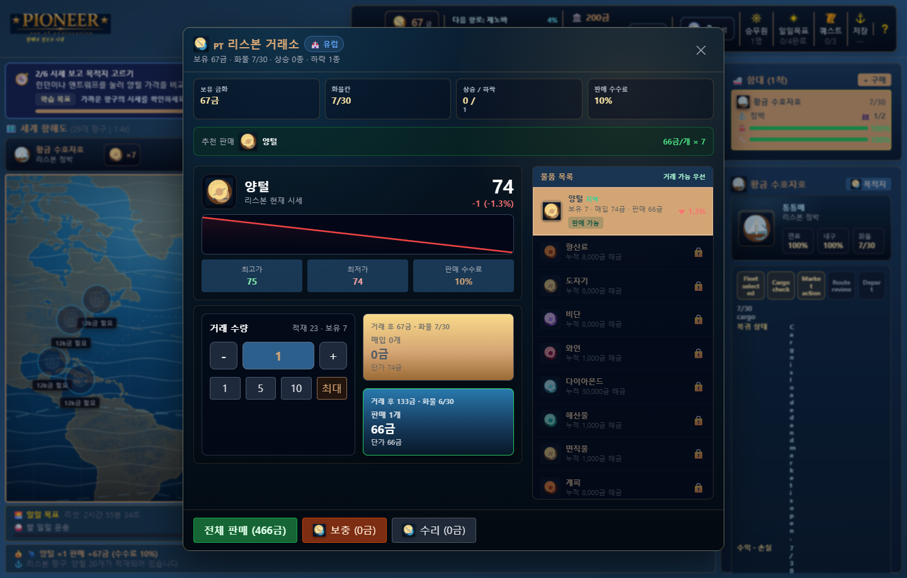
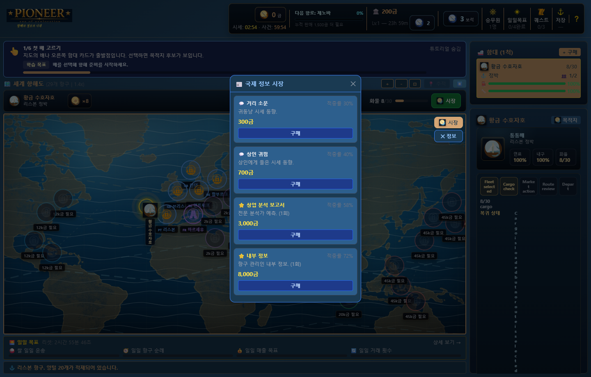
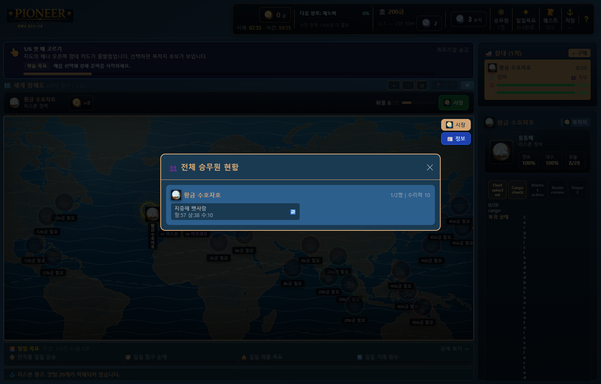
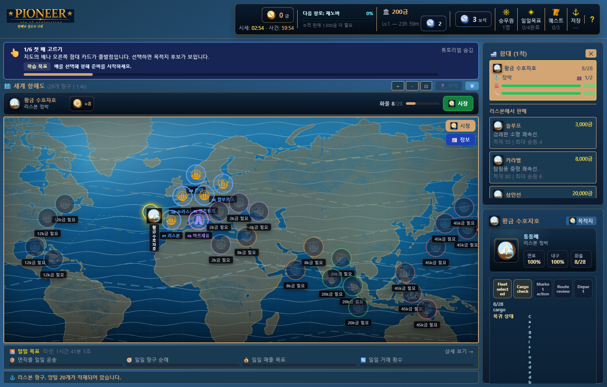
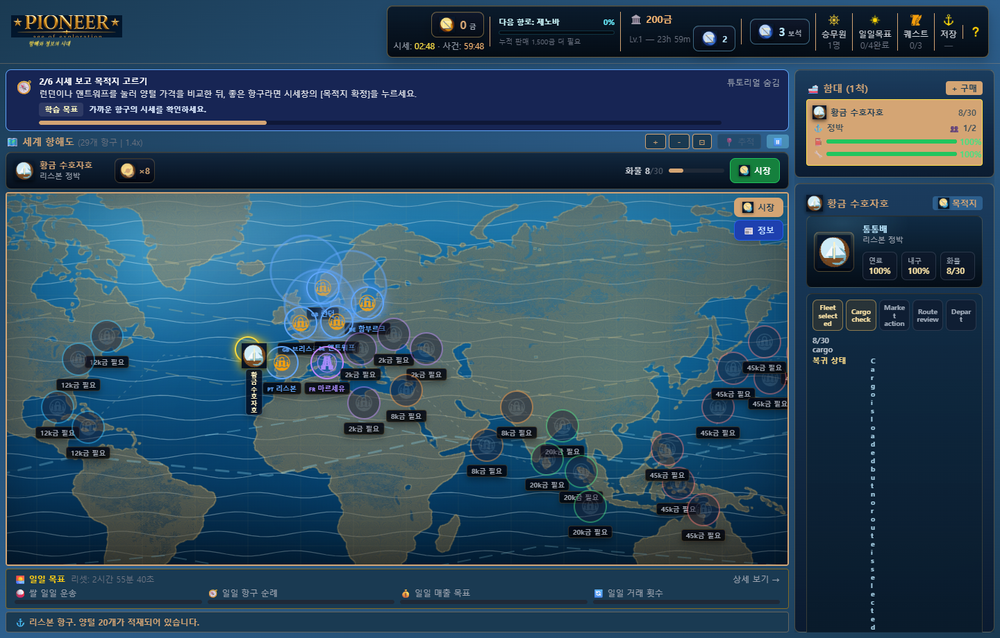

Pioneer의 시장에는 외워서 반복할 하나의 정답이 없습니다. 3분마다 가격이 조금씩 움직이고, 플레이어가 상품을 사거나 팔면 해당 항구의 가격이 즉시 반응합니다. 여기에 1시간마다 외부 대형 사건이 일부 항구의 특정 상품을 크게 흔듭니다.
그래서 플레이어는 매번 같은 질문 앞에 다시 서게 됩니다.
지금 이 가격에 살까? 여기서 팔까? 더 큰 차익을 위해 먼 항구까지 갈까?
좋은 가격을 찾았다고 끝이 아닙니다. 빠른 배는 적재량이 작고, 큰 화물선은 느립니다. 긴 항로에서는 연료를 아끼고 선체를 유지할 선원이 필요합니다. 출항 전에는 예상 수익, 이동 시간, 위험 등급, 위협과 차단 사유를 함께 비교해야 합니다.
Pioneer의 핵심 루프는 게임 이론과 행동심리학의 검증된 원리를 무역 시뮬레이션 문법으로 번역한 결과입니다.
가격은 3분마다 ±2.5% 범위에서 소폭 변동하고, 1시간 주기의 대형 사건은 특정 항구를 16~38% 흔듭니다. 이 두 주기가 서로 독립적으로 작동하기 때문에 "다음 기회"가 언제 올지 플레이어는 정확히 알 수 없습니다. 행동심리학의 변동 비율 강화(Variable Ratio Reinforcement)는 가장 강한 지속 행동을 유도하는 보상 구조입니다.
Kahneman과 Tversky의 연구에 따르면 인간은 동일한 크기의 이익보다 손실을 약 2배 더 크게 느낍니다(손실 회피, Loss Aversion). Pioneer는 이 원리를 항해 위험 구조에 직접 연결합니다. 화물을 가득 싣고 출항한 뒤 시세가 급락하면, 플레이어는 이익 기대치보다 손실 가능성에 훨씬 강하게 반응합니다.
플레이어가 대량 거래를 하면 해당 항구의 가격이 최대 ±18% 즉시 반응합니다. "내 결정이 세계에 흔적을 남긴다"는 행위성(Agency) 감각은 나쁜 결과에서도 재도전 동기를 만들어냅니다.
가격 히스토리(최근 20개)와 시장 정보 패널은 역량감(Sense of Competence)을 자극합니다. 데이터를 분석해서 좋은 거래를 성사시킨 플레이어는 "내가 잘 읽었다"고 느끼며, 이 역량감은 어려운 시세 상황에서도 포기하지 않게 만드는 동력이 됩니다.
3분 소폭 변동과 1시간 대형 사건의 카운트다운은 화면 상단에 항상 노출됩니다. "90초 뒤에 가격이 바뀐다"는 정보는 FOMO(Fear of Missing Out)를 자극하며 플레이어를 결정 지연에서 행동으로 밀어냅니다.
Pioneer의 성장 구조는 단순 수치 상승이 아닙니다. 성장할수록 플레이어가 고려할 전략의 범위가 넓어지고, 같은 시세표에서도 전에는 보이지 않던 기회가 보이기 시작합니다. 판단의 범위를 넓혀주는 것이 핵심입니다.
자이가르닉 효과(Zeigarnik Effect)에 따르면 인간은 미완료 작업을 더 강하게 기억합니다. 출항 중인 선박, 카운트다운 중인 타이머, 진행 중인 퀘스트가 플레이어를 화면에 붙잡습니다.
Pioneer의 시장은 주식처럼 가격 흐름을 읽고 매수·매도 타이밍을 판단하는 경험을 항구 상품 무역의 언어로 옮겼습니다.
| 시장 변화 | 실제 규칙 | 플레이 감각 |
|---|---|---|
| 소폭 변동 | 3분마다 최대 ±2.5% | 기다릴지 지금 거래할지 고민 |
| 플레이어 거래 영향 | 거래 즉시, 영향 상한 ±18% | 내 행동이 가격을 움직이는 손맛 |
| 대형 시장 사건 | 1시간마다 2~4개 항구의 한 상품 16~38% 변동 | 익숙한 항로가 갑자기 기회나 함정으로 변화 |
| 가격 히스토리 | 최근 20개 가격 | 감이 아니라 흐름을 보고 판단 |


Pioneer의 시장 정보 패널은 4단계 정보 티어로 구성됩니다. 플레이어는 골드를 지불해 특정 항구·상품의 가격 방향과 변동 폭 예측을 구입할 수 있으며, 티어가 높을수록 정확도와 예측 강도가 높아집니다.
| 정보 티어 | 기본 비용 | 정확도 | 예측 강도 | 특성 |
|---|---|---|---|---|
| 거리 소문 | 300금 | 30% | ±15~45% | 반복 구매 가능 |
| 상인 귀띔 | 700금 | 40% | ±25~65% | 반복 구매 가능 |
| 상업 분석 보고서 | 3,000금 | 58% | ±60~130% | 1회 한정 |
| 내부 정보 | 8,000금 | 72% | ±100~200% | 1회 한정 |
세금 레벨이 높아질수록 정보 구입 비용이 1.12배씩 상승하므로, 후반 플레이에서는 "정보 구입 비용 대비 예상 수익"을 계산하는 투자 판단 층이 추가됩니다. 항구 관리인의 내부 정보는 가장 정확하지만 가장 비싸 — 언제 투자할지 스스로 판단해야 합니다.

선원은 단순 수집 카드가 아니라 실제 운항 수치에 연결됩니다.
| 능력 | 실제 효과 | 배치 판단 |
|---|---|---|
| 항해 | 이동 속도 증가 | 빠른 회전이 필요한 항로 |
| 수리 | 선체 자동 수리 | 손상이 누적되는 장거리 항해 |
| 연료 효율 | 연료 소모 감소 | 먼 항구까지 안정적으로 이동 |
| 선체 효율 | 선체 손상 완화와 수리 보조 | 악천후와 긴 항로 대응 |
| 물류 | 화물칸 증가 | 느리더라도 큰 차익을 노리는 운송 |

11종 선박은 속도, 기본 적재량, 최대 승원 수와 가격이 다릅니다. 빠른 소형선은 짧은 항로에서 시세 변화에 민첩하게 대응하고, 큰 화물선은 한 번의 성공에서 더 큰 이익을 만들지만 이동 시간이 길어집니다.

출항 전 항로 요약은 예상 수익, 이동 시간, 위험 등급, 위협 원인과 출항 차단 사유를 함께 보여줍니다. 이익이 커도 위험이 높거나 선원이 없으면 출항을 다시 생각해야 합니다.

안전한 근거리를 반복할지, 변동이 끝나기 전에 먼 항구로 달릴지, 큰 배에 화물을 가득 싣고 위험을 감수할지 — 그 선택의 패턴이 플레이어의 항해 스타일을 만듭니다.
| 항목 | 상태 |
|---|---|
| 29개 항구와 상품 거래 | ✓ 구현 완료 |
| 11종 선박과 함대 운용 | ✓ 구현 완료 |
| 선원 고용·배치·성장 | ✓ 구현 완료 |
| 3분 소폭 변동 · 즉시 거래 영향 · 1시간 대형 사건 | ✓ 구현 완료 |
| 예상 수익·시간·위험·차단 사유 항로 요약 | ✓ 구현 완료 |
| 퀘스트·일일 목표·저장/불러오기 | ✓ 구현 완료 |
| Electron portable 실행파일 | ✓ Pioneer_v1.8.1_portable.exe 배치 완료 |
| 자동 테스트 (7개 모듈) | ✓ node --test 33개 통과 |
본 문서의 이미지는 Pioneer_v1.8.1_portable.exe를 1440×920 환경에서 직접 실행해 캡처한 실제 게임 화면입니다.
한 줄 소개: 실시간으로 변하는 항구 시세를 읽고, 싸게 사서 비싸게 파는 대항해 무역 시뮬레이션.
골드를 최대한 많이 벌어 더 좋은 선박과 선원을 확보하고, 먼 항구를 개방해 더 큰 무역 루트를 개척합니다. 명시적인 종료 조건은 없으며 플레이어 스스로 목표를 설정하는 샌드박스 방식입니다.
| 조작 | 동작 |
|---|---|
| 지도 위 선박 클릭 | 선박 선택 → 항로 모드 활성화 |
| 항로 모드 중 항구 클릭 | 해당 항구로 출항 |
| 항구 이름 클릭 (정박 시) | 항구 시세 패널 열기 |
| 우측 패널 탭 | 현황 / 화물 / 승무원 / 강화 / 임무 전환 |
| 시장 열기 버튼 | 현재 항구 상품 구매 화면 |
| 화물 탭 → 상품 클릭 | 현재 항구에서 화물 판매 |
| 지도 드래그 / 스크롤 | 지도 이동 / 줌 |
① 항구 도착 → ② 시세 확인 → ③ 화물 구매 → ④ 수익성 항구로 출항 → ⑤ 도착 후 판매 → ① 반복
아래 링크를 클릭하면 설치 없이 브라우저에서 즉시 플레이할 수 있습니다.
🌐 https://keecor.github.io/2_Pioneer/
Chrome / Edge 최신 버전 권장. 모바일 미지원.
🔗 https://github.com/KeeCOr/2_Pioneer